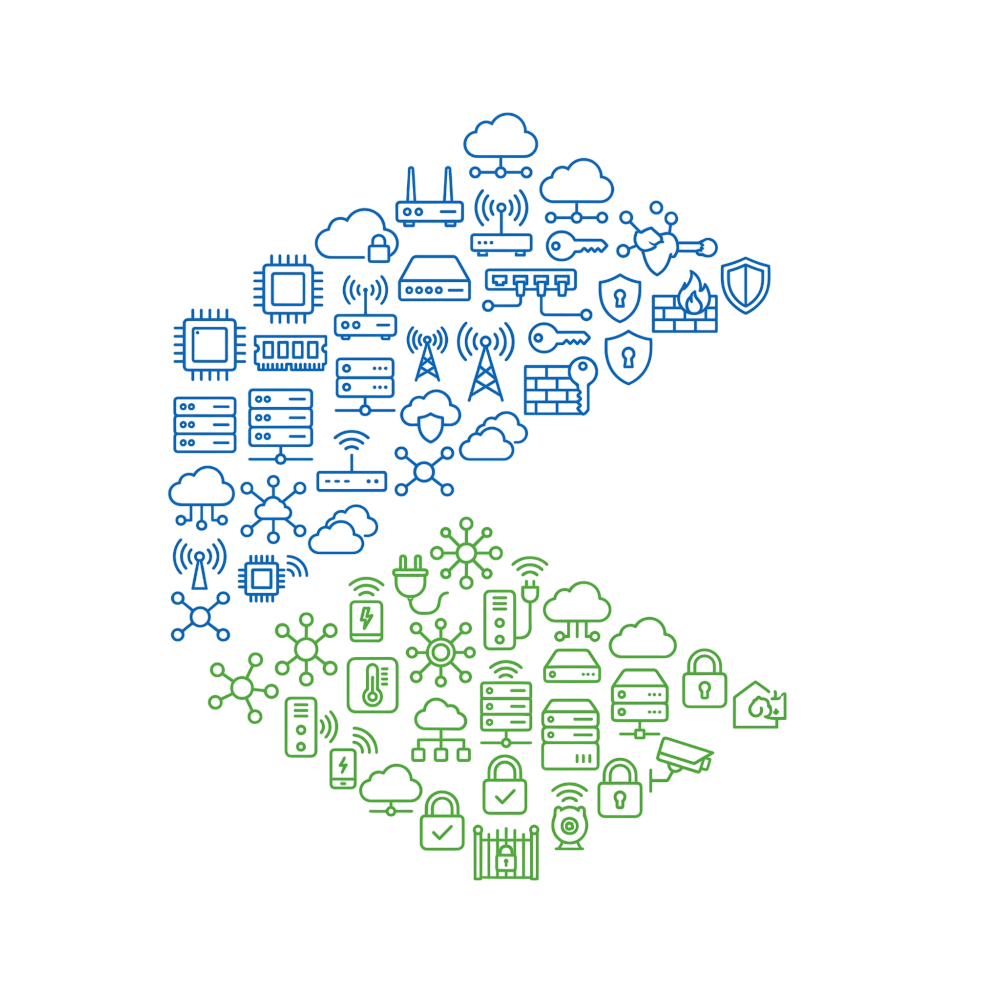

Engineering Services & Solutions
Kathir Computers
& Power Electronics
Empowering Innovation, Energizing Solutions
Engineering services and solutions spanning power electronics, computing infrastructure, networking, and cybersecurity—delivered under single-source accountability.

Services
End-to-end technology environments
In today’s interconnected world, modern technology environments are more tightly integrated than ever before: network reliability builds upon robust hardware integrity, and stability. Our expertise lies in designing, deploying, and sustaining comprehensive, end-to-end ecosystems—spanning power continuity, silicon sourcing, resilient network architecture, and scalable cloud infrastructure. We also deliver solutions that integrate AI-driven systems for smarter automation, predictive analytics, and process optimization. From uninterrupted power all the way to intelligent software and secure networks, we empower clients to embrace innovation confidently while maintaining rigorous standards of protection and coherence.
Clients engage us to reduce multi-vendor friction and hold clear ownership across cybersecurity and the full stack. We support the complete lifecycle so each layer operates securely and coherently—from architecture through sustainment.
01
Architect & Establish
Power continuity planning (UPS/inverters), hardware procurement, and secure, scalable network and cloud architectures.
Value
Solutions that reinforce each other
One accountable partner across power, silicon, network, and security—so every layer is designed to strengthen the next.
Power Electronics
Clean, continuous power as the foundation of stable systems.
Computing Infrastructure
Hardware and platforms engineered for the workloads you run.
Networking & Cloud
Connectivity that keeps environments coherent end to end.
Cybersecurity
Defenses built into the stack—not bolted on after deployment.
When these layers are engineered together, the environment is resilient by design—not assembled from disconnected vendors after the fact.
Contact
Discuss a project
Reach out to explore how we can engineer and sustain your technology environment.
Kinathukadavu, Coimbatore, Tamil Nadu